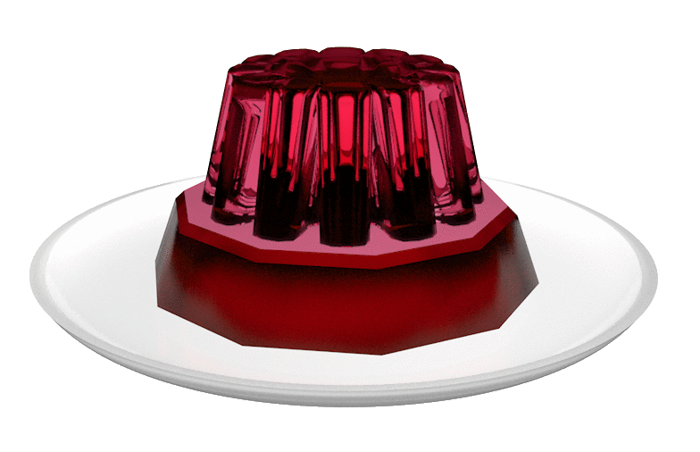
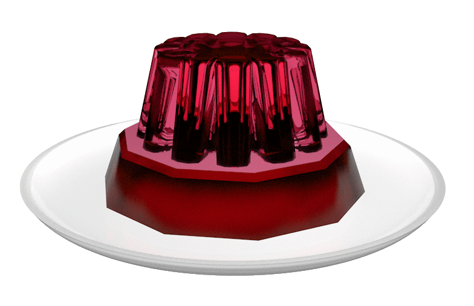
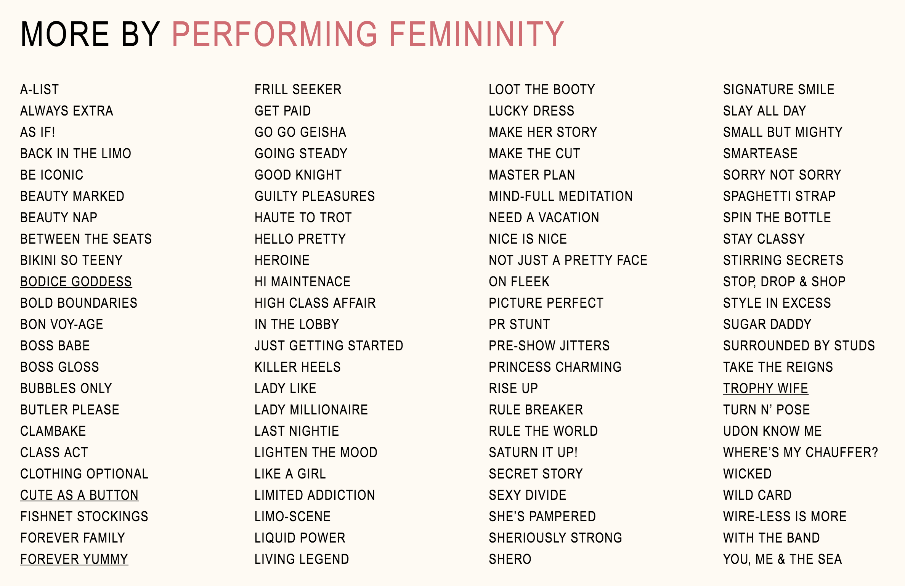
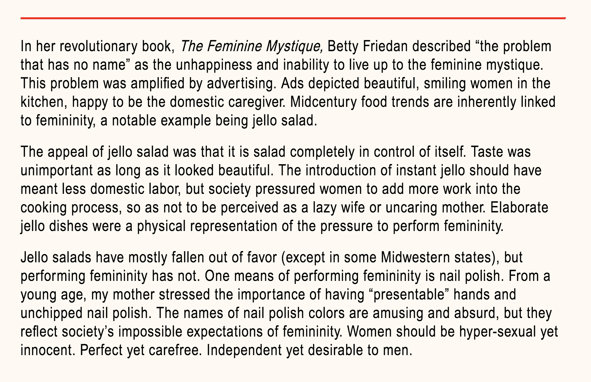
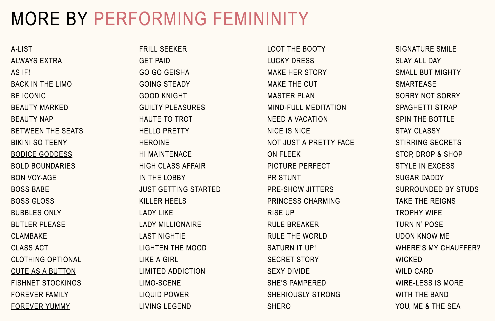
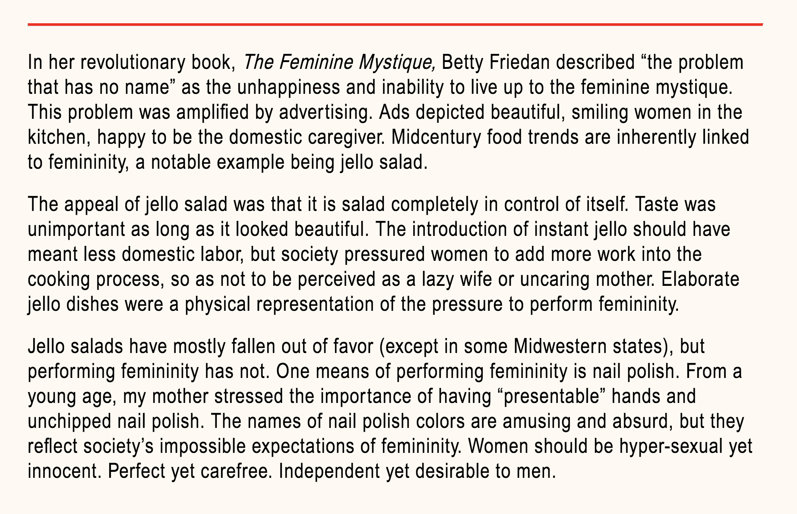

Inspired by Betty Friedan's revolutionary book,
The Feminine Mystique, this website examines society’s impossible expectations of femininity from the 1950s until today. Elaborate jello dishes were a physical representation of the pressure to perform femininity.
The design is formally based on midcentury recipe cards. With a click, the website flips over to show the back of the card that alphabetically lists the names of contemporary nail polish colors. Hovering over a name changes the text to its actual color. The color names are amusing and absurd, but they too reflect society’s impossible expectations of femininity. Women should be hyper-sexual yet innocent. Perfect yet carefree. Independent yet desirable to men.
Home
 



 


